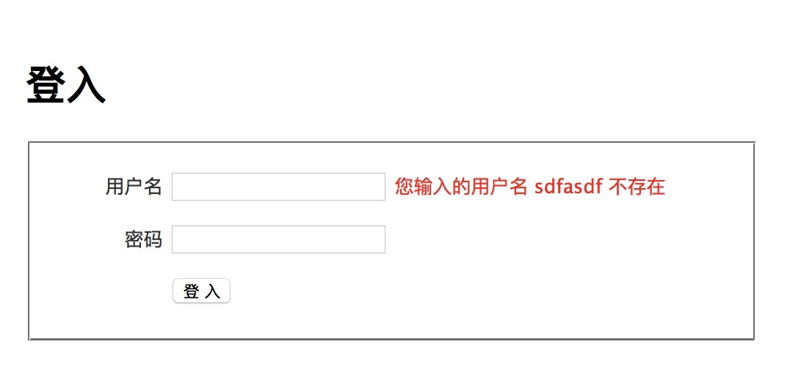
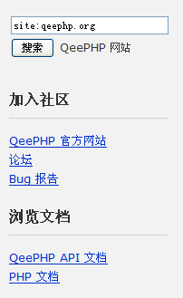
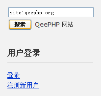
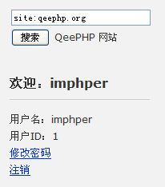

用户登录和注销
通过前面实现用户注册功能，我们了解了如何完善模型及创建表单。这一个小节我们来实现用户的登录和注销功能。
实现登录
修改 users 控制器，加入下列代码：
|
|
这段代码中有两个地方需要说明一下。
调用行为插件的方法
acluser 行为插件为模型扩展了多个方法，包括：
| 方法名 | 用途 | 类型 |
|---|---|---|
| validateLogin() | 验证用户登录并返回用户对象 | 类方法 |
| validateUsername() | 验证用户名 | 类方法 |
| validatePassword() | 验证用户名和密码 | 类方法 |
| changePassword() | 修改指定用户的密码 | 类方法 |
| checkPassword() | 检查指定的密码是否与当前用户的密码相符 | 实例方法 |
| changePassword() | 修改当前用户的密码 | 实例方法 |
| updateLogin() | 更新用户的登录信息 | 实例方法 |
| aclRoles() | 获得包含用户所有角色名的数组 | 实例方法 |
| aclData() | 获得用户的 ACL 数据 | 实例方法 |
类方法是指调用该方法不需要构造模型对象实例，而实例方法则只能通过模型对象实例来调用。
要调用一个类方法：
|
|
调用一个实例方法则是：
|
|
可以看出，类方法必须通过 meta() 方法返回的连贯接口来调用。
在用户登录中，我们用到了 acluser 插件提供的 validateLogin() 类方法，所以调用方式就是：
|
|
validateLogin() 方法检查用户名和密码的正确性，如果检查通过就返回有效的用户对象，否则抛出不同的异常。通过拦截异常我们就可以给用户反馈合适的错误信息。
acluser 插件源码在 qeephp框架的 library/extend/behavior/acluser.php中，看源码和代码注释掌握使用方法，后面的教程我们将讲解如何开发新的行为插件
记住用户的登录状态
登录成功，我们必须让应用程序记住用户的登录状态，不然用户一刷新页面，又变成未登录了。在 QeePHP 自动生成的应用程序对象中，已经提供了一系列方法来完成这项工作：
| 方法名 | 用途 |
|---|---|
| changeCurrentUser | 将用户数据保存到 session 中 |
| currentUser() | 获取保存在 session 中的用户数据 |
| currentUserRoles() | 获取 session 中用户信息包含的角色 |
| cleanCurrentUser() | 从 session 中清除用户数据 |
所以要让应用程序记住用户的登录状态，调用 changeCurrentUser() 方法就可以了。
具体可以查看项目文件 app/myapp.php 源码了解更多。
添加登录需要的视图
我们还没有添加登录页面需要的视图，不过由于登录和注册的页面内容几乎一样，所以我们直接把注册的视图复制到 login.php 视图页面。修改下标题为登入即可。修改好后，访问 http://localhost/todo/public/index.php?controller=users&action=login测试一下登录功能吧。

实现注销
既然有登录，就有注销，在 users 控制器新增方法 actionLogout()：
|
|
在用户界面上显示登录状态
现在注册、登录和注销功能都做好了，但是用户界面上还没有相应的链接，而且也没有显示出用户的登录状态。
在编码之前，我们可以打开 app/view/_layouts/default_layout.php 文件来看看。可以看到其中有一行：
|
|
这行代码载入了一个名为 sidebar 的视图片段，显示出来的效果就是：

在视图中，可以用“$this->_element(片段名)”来载入一个视图片段，该视图片段存储为“app/view/_elements/片段名_element.php”文件。例如“sidebar”视图片段对应的文件名就是“app/view/_elements/sidebar_element.php”。
视图片段通常用于一些在各个页面都会重复出现的内容，例如页头、页脚等。合理使用视图片段可以极大减少视图中存在的重复代码。不过视图片段并不能够处理自己需要的数据，所以像显示当前用户登录信息这样的需求，我们需要使用用户界面控件。
用户界面组件化
在前面的章节中，看到如何通过视图的继承和区块来分拆用户界面，最终获得各个可以重用的部分。而用户界面控件就是一种更强大的手段，可以将用户界面上的一个独立区域封装起来。
这个区域不但有自己的表现，还可以有自己的数据。例如“最新10个回复”这个控件可以自己查询最新的 10 个回复数据，然后载入自己的视图来构造 HTML 代码。而在传统开发模式中，如果某个页面需要“最新10个回复”这个区域，就必须在该页面对应的控制器动作中查询需要的数据。最终，各个控制器动作中都重复着相同的代码。
QeePHP 利用用户界面控件机制，彻底解决了这个问题，完全符合 DRY 原则。现在我们来把 sidebar 这个视图片段转换为一个用户界面控件。
用户界面通常由控件类和控件视图两部分组成。控件类都放置在 app/control/ 目录中。我们现在新建文件 app/control/sidebar.php 文件，内容如下：
|
|
然后将文件 app/view/_elements/sidebar_element.php 移动到 app/control/ 目录，并改名为 sidebar_view.php。打开该文件，在适当位置添加如下内容：
|
|
最后，修改 app/view/_layouts/default_layout.php 文件，将：
|
|
改为：
|
|
刷新浏览器，并尝试登录和注册，观察侧边栏的变化：
未登录：

已登录:
